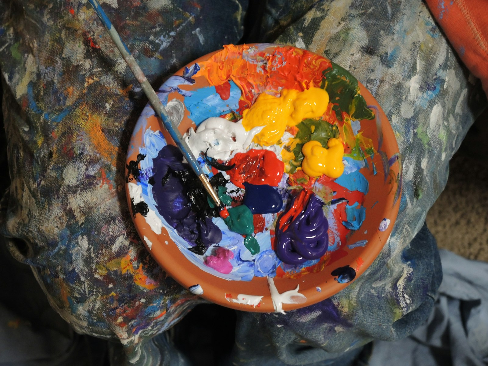
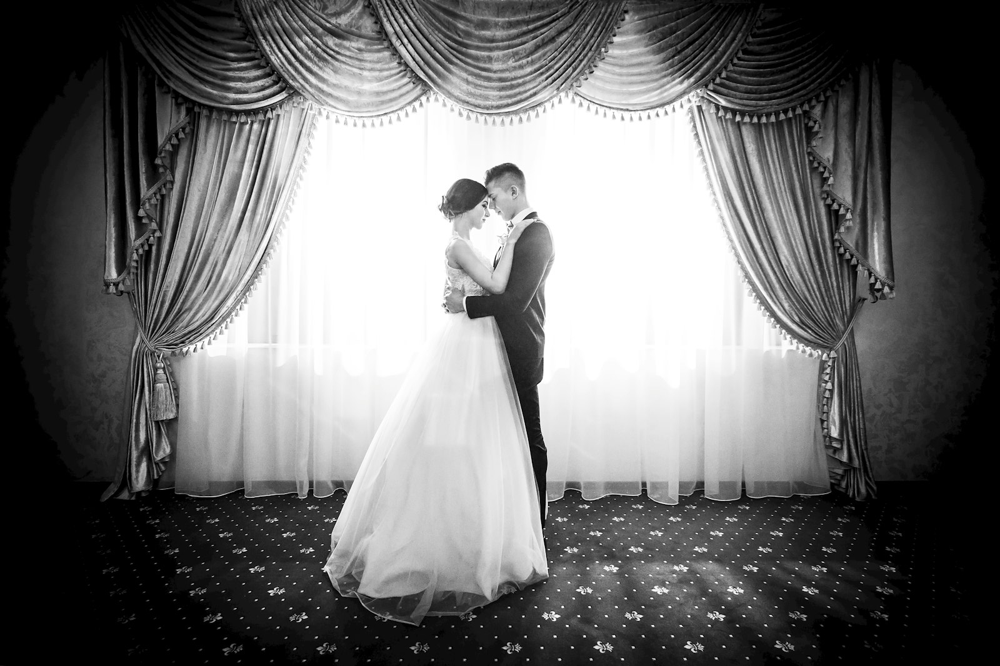

CASSETTES
Por qué el sitio se ve así. Las referencias culturales que firmamos. Esta página es opcional — si te importa el producto y no la marca, salta a /producto. Pero si vas a contratarnos por 18 meses, probablemente quieras saber con quién hablas.
El visual es deliberadamente del archivo MTV/Tony Hawk/Stüssy. No nostalgia — descendencia directa. Estos son los referentes que firmamos, todos consultables por nombre.
Suburbia americana hiper-saturada, hand-held, color de revista mal calibrada. Familia disfuncional con dignidad. La fuente de la estética "dignified mess" que firma TENET.
El menú UI más copiado de la década. Tipografía industrial, listas de goals con timer, soundtrack agresivo. Nuestra página de producto bebe directamente de esta arquitectura visual.
Lower-thirds, parental-advisory plates, "viewer discretion advised", chromatic aberration deliberada. Todo el lenguaje de transición que usamos. Era cuando la cadena todavía tenía tipografía propia.
Sarcasmo flat, paleta limitada, contraste alto, cero ironía sobre la ironía. Su voz editorial es la voz de nuestro copy: directa, cínica con afecto, alérgica al hype.
VHS look, parental advisory deliberada, "do not try this at home". El tono brutalmente honesto sobre el esfuerzo físico. Nuestro respeto por que cerrar el loop no es magia, es trabajo y golpes.
Los videoclips de Beastie Boys (Sabotage, '94) y los comerciales tempranos de Adidas. La cámara que se siente robada, no profesional. La duda deliberada entre arte y marketing.
El zine que enseñó al skate a tomarse en serio sin ser solemne. Sticker bombs, tipografía amateur deliberada, fotografía en clave de revista barata. La estética "Edición 01" del sitio nace aquí.
Wordmark con peso desproporcionado, paleta primaria sin pena, mezcla de letterforms del Pacífico y Nueva York. Nuestro wordmark "T E N E T" en condensed Anton tiene esta deuda.
Las portadas con riso misregistration, headlines de 96px, fechas en tipografía industrial. La maqueta de "TENET QUARTERLY" es un homenaje directo.
El cuerpo es del 2000, pero la postura es Sterling Cooper Draper Pryce. Cobrar lo que cuesta, no pedir disculpas, presentar trabajo serio en silencio. Estos referentes los citamos en alto.
El show. Don Draper presentando Carrousel. Sterling vendiendo Lucky Strike. La idea de que la creatividad sin presupuesto y sin respeto no produce nada. Nuestro manifiesto en italics es directo descendiente.
El manual original. "The consumer isn't a moron, she's your wife." "Tell them what it does." Nuestra página de producto es, literalmente, Ogilvy aplicado a CAPI y Enhanced Conversions.
El ad más copiado de la historia. Cero adjetivos, una especificidad imposible de replicar. Nuestra promise "47% / 22% / 14d" es la misma jugada en 2026.
Los títulos de Hitchcock. La logo de AT&T. La capacidad de decir "qué es esto" en una sola forma. Nuestro favicon TNT y la disciplina del wordmark vienen de su escuela.
La gran tipografía bandera roja sobre blanco. La autoridad que firma cada portada. El "TENET QUARTERLY" hereda esa relación entre tipografía y reportaje serio.
La fotografía de Americana suburbana en color. El diner vacío, el parking iluminado en sodio. Las fotos que usamos como background están deliberadamente en su escuela.
El nombre es deliberado, el cuadrado de Sator es deliberado, el copyright en romanos es deliberado. La marca está construida para ser citada por nombre, no descrita por categoría.
El nombre. El concepto del tiempo bidireccional aplicado a la atribución. El Sator square como objeto cultural. La idea de que cada acción tiene su contrapartida invertida — exactamente lo que hace una conversión atribuida server-side.
SATOR / AREPO / TENET / OPERA / ROTAS — palindrómico horizontal, vertical y diagonal. Encontrado en las ruinas de Pompeya. El emblema cultural más antiguo de la idea de "lee igual al revés".
El loop temporal padre-hija como ingeniería de causa y efecto. Nuestra obsesión con cerrar el loop entre clic y conversión bebe de la misma fuente filosófica.
"You don't need a better website. You need a website that makes a competent person feel slightly stupid for not having thought of it." El view-source manifesto, el contador de loops, el 404 invertido — Sutherland aplicado al copy.
El refund de 60 días. La transparencia de pricing. La frase "lo tomas o no encajamos". Hormozi aplicado al closed-loop performance, sin el ladrido. La risk reversal con dientes.
El tagline en español es nuestro. Aplica el principio de Tenet (acción inversa simultánea) a la única métrica que importa en performance marketing: el euro gastado vuelve trazado al ingreso que generó. Forward time + reverse time = atribución cerrada.
Las fotos que ambientan el sitio no son de stock genérico — son la era a la que pertenecemos: parking de motel, halfpipe vacío, CRT con interferencia, diner de carretera, cabina telefónica. Suburbia americana como marca registrada estética, vista desde Madrid en 2026.


// fotografías con licencia libre · Unsplash CC0 · curadas por TENET
Si llegaste hasta aquí, hay un 80% de chance que sí. Te debemos 30 minutos.